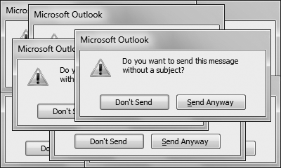
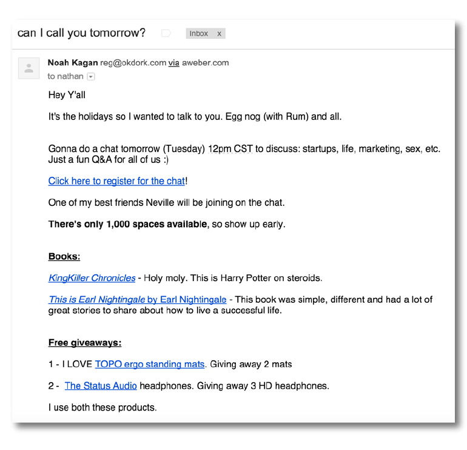
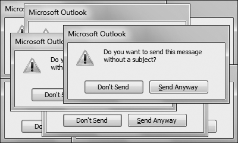
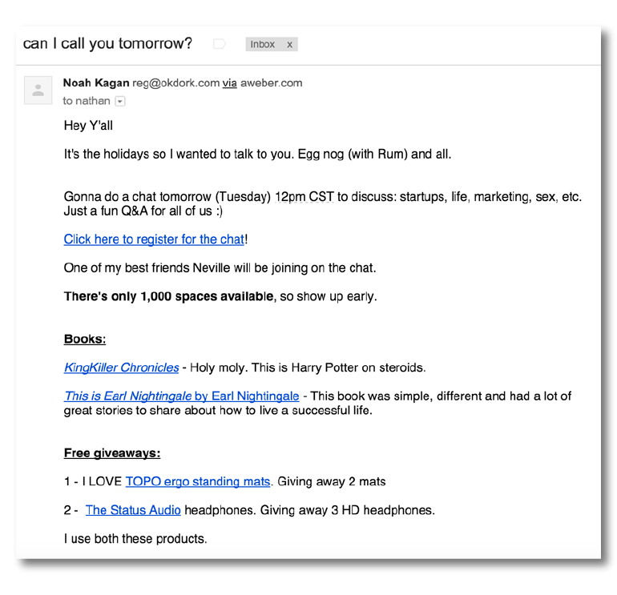

Scam emails,
Get a message, report it...
delete the fraud...
Crazy seeing especially when I never contacted them for anything anyway.
Word you should never use in an email.
You want to sound like an intelligent person rather than robot, that is....
The richness of the human voice express action, like singing ballads at karaoke, do with caution.
Anyway, Anyways....How is anyways a word?
Anyway, suited to use in different situations.
Mistaking one, changes the tone and meaning of your writing.... you sometimes read them by any means.
Support emails help guides support tickets asking for help.
received... you automatically reply.
Spam emails files consumer. You informed billing department... charged for one anyway.
Recipient reads your email, user answers.
Sending email... can't read receipts, contact administrator.... send receipt to the person who sent the email message.
"I hope this email finds you well"......
You seen that email?
Those daily incursions no one can avoid, are part of?
Preview: HOW TO SCREW YOURSELF OVER!
Email you haven't contacted.... exercises what types of things to include and how to structure write an email doing two things at once.
You write... "Anyway, I have to get back to doing some work".